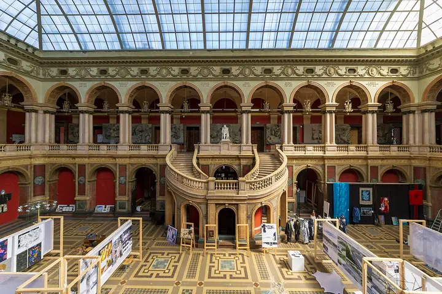

Фото: Lion10~commonswiki, CC BY-SA 4.0 · Wikimedia Commons
Музей · Центр
Музей Штиглица
Музей прикладного искусства со стеклянным куполом Большого зала — одно из самых красивых пространств.
- ₽ · до 1 500 ₽ на человека
- Новое в каталоге
- в 1 плане
Позвать сюда: Музей ШтиглицаОткрыть в каталоге: Музей ШтиглицаМаршрут до места: Музей Штиглица
Адрес и детали
- Адрес
- Соляной пер., 15
Открыть на Яндекс Картах (в новой вкладке) - Метро
- м. Чернышевская
- Район
- Центр
- Цена
- до 1 500 ₽ на человека
- Часы работы
- вт–вс 11:00–17:00 · проверили в октябре 2026
- Телефон
- +7 (812) 273-59-03
- Проверено
- работает — проверили в октябре 2026
Планы с этим местом 1
- Музей Штиглица · Музей · м. Чернышевская
- 6 минут пешкомFrameis · Кафе-пекарня
Большой зал под стеклянным куполом — одно из самых красивых пространств города, — а потом 6 минут пешком — кафе на Моховой с собственной выпечкой.
Открыть план: Стеклянный купол Штиглица и булочка дняПозвать сюда: Стеклянный купол Штиглица и булочка дня
Фото: Lion10~commonswiki, CC BY-SA 4.0 · Wikimedia Commons

Входит в подборки
Похожие рядом
Что ещё рядом
Как позвать
- Выбери план, место или событие — в карточке адрес, цены и маршрут в Яндекс Картах.
- Нажми «Позвать сюда» — соберётся приглашение-игра для свидания или голосование для компании.
- Отправь ссылку в любой мессенджер: тебе ответят, а компания отметит, куда и когда может. Бесплатно и без регистрации.